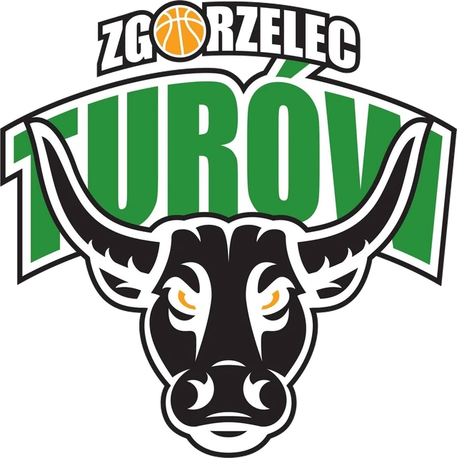

New KS Turów website
Our new club website is live. Here you will find news, information about tryouts and training, and contact details.
Basketball sports club · Zgorzelec · since 1948
KS Turów is basketball with passion — training, games and a sporting atmosphere for children, teenagers and whole families. Join our training sessions and come cheer with us!

[ZDJĘCIE: zawodnicy KS Turów w akcji na hali — dodaj w panelu]
The latest from the club.
Our new club website is live. Here you will find news, information about tryouts and training, and contact details.
KS Turów is a basketball sports club from Zgorzelec with traditions dating back to 1948. It brings together players, coaches, parents and fans for whom basketball is more than a sport.
Today the senior team PGE GiEK Turów Zgorzelec plays in the Polish 2nd League (2 Liga Mężczyzn), and the club trains young players in its U13, U15 and U17 teams. We focus on quality and care in training, fair rules and an atmosphere in which every player can grow.
Well-planned sessions and attention to detail — from technique to game preparation.
Clear rules for players and parents, and open communication.
Coaching led by the club’s staff. [DO UZUPEŁNIENIA]
A club from Zgorzelec, run by people who love basketball.
From a school team in a gym to the Polish championship and the EuroLeague. Below is the history of basketball and of the Turów Zgorzelec club — chapter by chapter.
1961–1964
The beginnings of basketball in Zgorzelec are linked to Mieczysław Krajewski, a graduate of the University School of Physical Education in Wrocław. In 1961 he founded a men’s basketball section at MKS Osa Zgorzelec. Among its players was Takis Kanculis, who later became one of the key figures of local basketball. The team trained in the gym of Primary School No. 1, and secondary-school students played in the B class of the regional league.
The section existed until 1964. After it was dissolved, the players moved to the newly founded Olimpia Zgorzelec, while Krajewski focused on athletics. More than a decade later, when Turów was promoted to the second division and Takis Kanculis’s team won the Polish primary-school championship, the popularity of basketball in the town grew significantly. In response to this interest, efforts were also made to set up a women’s section.
1948–1966
The history of the Turów club began earlier, in 1948. The management of the mine in Bogatynia founded KS “Górnik” Turoszów, initially with just one section — football. In 1951 the club added tennis, and in 1961 it adopted the name Klub Sportowy “Turów”. Three years later sailing, motorboating and scuba-diving sections were created. Men’s basketball joined them in 1965, and a year later the club’s headquarters moved to Zgorzelec.
1978
Coach Jan Gruca played an important role in the team’s development. He spotted the talent of Mieczysław Młynarski and Jerzy Binkowski, who went down in the history of Zgorzelec basketball. In 1978 Turów was promoted to the top league for the first time. However, its stay at the highest level lasted only one season. The club also had boxing and sailing sections; the boxing section was closed in the 1990s.
2003–2007
Before the 2003/2004 season Turów had the option of buying a so-called wild card that would have allowed it to play in the top league. The club turned this down, choosing to earn promotion on the court. In 2004 the team won the first-division (I liga) title and was promoted to the top league.
In July 2006 the legal form of the club’s basketball operations changed. It was separated from the association and transferred to a new joint-stock company — KKS Turów Zgorzelec S.A. The sailing section remained in the existing association. The company’s first president was Arkadiusz Krygier, who succeeded long-serving president Zbigniew Kamiński. Kamiński became chairman of the supervisory board but resigned in March 2007 after 21 years with the club.
2006–2010
In the 2006/2007 season Turów became Polish runner-up for the first time. It finished first after the regular season and, in the following play-off rounds, beat Gipsar Stal Ostrów Wielkopolski and Śląsk Wrocław. In the final it had to concede to Prokom Trefl Sopot.
In September 2007 Polskie Sieci Elektroenergetyczne became the team’s strategic sponsor, and from then on it played as PGE Turów Zgorzelec. In the 2007/2008 season the club made its debut in the ULEB Cup, at the time the competition just below the EuroLeague. Because of arena requirements, it played its European games at the Tipsport Arena in Liberec, Czech Republic.
The team finished the ULEB Cup group stage in first place with eight wins and two losses. It then eliminated ČEZ Basketball Nymburk and BC Kyiv, reaching the Final Eight tournament in Turin. In the Polish league Turów once again reached the final. After a seven-game series it lost to Prokom Trefl Sopot 3–4.
In January 2008 Zbigniew Kamiński, the club’s long-time president and an important figure in its history, passed away. In February the company also changed its president — Arkadiusz Krygier was replaced by Piotr Waśniewski. In the autumn of the same year Jan Michalski took over the position.
The 2008/2009 season brought further changes. In January Sašo Filipovski stopped coaching the team and Paweł Turkiewicz took over his duties. The squad was strengthened by, among others, Tyus Edney, Marcin Stefański and Andrzej Adamek. After a winning streak Turów finished second after the regular season. In the play-offs it beat AZS Koszalin and Energa Czarni Słupsk, but lost the final to Asseco Prokom Sopot. It was the third season in a row in which the Zgorzelec team finished as Polish runner-up.
In the 2009/2010 season Turów was coached successively by two coaches: Saša Obradović and Andrej Urlep. The team finished fifth after the regular season and then won the pre-play-off series against Kotwica Kołobrzeg. In the quarter-final it lost to Trefl Sopot, finishing the season in fifth place.
2010–2012
In the 2010/2011 season Torey Thomas and coach Jacek Winnicki stood out. Thomas received the season’s Most Valuable Player awards and was named to the league’s All-Star Five. Winnicki was named best coach of the regular season and of the whole competition. Turów finished the regular season in second place and in the play-offs got through the quarter-final and semi-final. In the final it lost to Asseco Prokom Gdynia after seven games. The Zgorzelec team played the maximum number of 19 games in those play-offs.
In the summer of 2011 the club was invited to the EuroLeague qualifiers. In the quarter-final of the tournament in Charleroi it lost to Khimki Moscow and did not qualify. In November, after Jan Michalski resigned upon becoming a senator, Waldemar Łuczak was elected club president.
In the 2011/2012 season Turów finished fourth in its EuroCup group. In the domestic league it beat Anwil Włocławek in the play-off quarter-final but lost the semi-final to Trefl Sopot. The team still fought for the bronze medal, but lost that series too — to Zastal Zielona Góra.
2012–2015
In June 2014 Turów achieved the greatest success in the club’s history — the Polish championship. In the play-off final of the Polish Basketball League (PLK) the team beat Stelmet Zielona Góra 4–2. In the same season the team also reached the Polish Cup final, finishing second.
The new season began with the Polish Supercup. As Polish champions, Turów made its EuroLeague debut — Europe’s most prestigious club competition — facing powerhouses such as Real Madrid, FC Barcelona and Olympiacos Piraeus in the group stage. After the EuroLeague campaign the club continued in the EuroCup and reached the TOP 16. In the domestic league the team again reached the final against Stelmet Zielona Góra and won the silver medal — Polish runners-up 2015.
2015–2018
After its most successful years, Turów remained among the top teams of the Polish Basketball League. In 2016 it finished 9th, and in the following years it played in the play-offs. In 2018, for financial reasons, the club withdrew from the league.
2018–2026
To save the basketball tradition after the collapse of the previous joint-stock company, a new entity was founded — Klub Sportowy “Turów” S.A. The team started again in the lower national leagues.
The club has established itself in the Polish 2nd League. Since the 2023/2024 season it has had a strategic title sponsor and plays as PGE GiEK Turów Zgorzelec. In 2025 another long-term agreement with the company was signed, and the sporting goal is a return to the top division — the Orlen Basket Liga.
Medals, trophies and European campaigns that made basketball history in Zgorzelec.
2014
The greatest success in the club’s history: in June 2014 the PLK play-off final was won 4–2 against Stelmet Zielona Góra.
2026
In September 2026 the team won the tournament, beating AK Orły Wrocław 89–66 in the final.
6×
2007, 2008, 2009, 2011, 2013 and 2015.
2015
In the 2014/2015 season the club reached the PLK final, losing to Stelmet Zielona Góra, and won the silver medal.
2014
Trophy won after the championship season.
2014/15
As national champions, Turów played in the EuroLeague for the first time in its history, facing Real Madrid, FC Barcelona and Olympiacos Piraeus, among others. After being eliminated it continued in the EuroCup Last 32.
Nowa hala
2014
At the end of 2014 the club moved to a modern arena in Zgorzelec with around 3,500 seats, which became its new home.
2008
Turin — after winning the group (8 wins, 2 losses) and knocking out Nymburk and BC Kyiv.
2018
In February 2018 the team reached the Polish Cup final and finished second after a close game against Polski Cukier Toruń.
2014
Runners-up in the Polish Cup in the 2013/2014 season.
2010
Reached the final of the national cup in the 2009/2010 season.
2018–2021
After withdrawing from the top league in 2018, the club was reorganised as KS Turów Zgorzelec. With strategic support from PGE GiEK S.A. it earned its way back to the national level — the 2nd League.
2011
Torey Thomas — season MVP and All-League Five; Jacek Winnicki — Coach of the Year.
2004
Promotion to the top league earned on the court — without buying a wild card.
1978
Under coach Jan Gruca.
PGE GiEK Turów Zgorzelec — roster and coaching staff in the Polish 2nd League.
shooting guard / small forward
power forward / center
point guard
power forward
small forward
shooting guard
small forward
point guard / shooting guard
center
center
shooting guard / small forward
power forward
point guard
Data from the official competition website: rozgrywki.pzkosz.pl
We train young basketball players in three age categories. Our youth teams compete in the Lower Silesian Basketball Association leagues and train at Hala CSR, ul. Maratońska 2.
small forward / power forward
point guard / shooting guard
small forward / power forward
point guard / shooting guard
point guard / shooting guard
point guard / shooting guard
point guard / shooting guard
power forward / center
power forward / center
point guard / shooting guard
shooting guard / small forward
power forward / center
small forward
small forward / power forward
small forward / power forward
point guard / shooting guard
small forward / power forward
center
shooting guard / small forward
shooting guard / small forward
Data from the official competition website: dzkosz.wroclaw.pl
shooting guard
shooting guard
point guard
point guard / shooting guard
point guard
power forward
small forward
point guard / shooting guard
power forward
power forward / center
shooting guard
power forward / center
shooting guard / small forward
small forward
point guard
Data from the official competition website: dzkosz.wroclaw.pl
shooting guard
point guard
small forward
center
power forward
shooting guard
small forward
point guard
small forward
center
shooting guard
power forward
shooting guard
small forward
shooting guard
shooting guard
Data from the official competition website: dzkosz.wroclaw.pl
Training groups for children and teenagers. For details and sign-up, please get in touch.
First steps in basketball: coordination, dribbling, passing, shooting and team play.
Sign up — Basketball training for childrenDeveloping technique and tactics, athletic preparation and competing in youth leagues.
Sign up — Youth groupsInformation about the club’s teams and competitions. [DO UZUPEŁNIENIA]
Ask about tryouts — Club teamsTraining, games and club moments.
Children’s training group
Action under the basket
The team after the game
Pre-game warm-up
Ball drills
Fans in the stands
Recent photos from the club profile.
Instagram profile: [DO UZUPEŁNIENIA]
The latest posts, photos and match reports straight from the club profile.
Loading posts…
After clicking, posts will be loaded from Facebook, which may set cookies.
Thank you to the companies that support basketball in Zgorzelec.
Senior team: PGE Turów Arena, ul. Lubańska 9A, 59-900 Zgorzelec.
Youth teams (U13, U15, U17): Hala CSR, ul. Maratońska 2, 59-900 Zgorzelec.
[DO UZUPEŁNIENIA]
[DO UZUPEŁNIENIA] — how membership fees are paid.
[DO UZUPEŁNIENIA]
The club regulations are available for download below. Regulations file: [DO UZUPEŁNIENIA]
We are happy to answer questions about training and tryouts.
Google Maps loads after you click.
Directions in Google Maps| Monday | 16:00–20:00 |
|---|---|
| Tuesday | 16:00–20:00 |
| Wednesday | 16:00–20:00 |
| Thursday | 16:00–20:00 |
| Friday | 16:00–20:00 |
| Saturday | closed |
| Sunday | closed |
Sample hours — [DO UZUPEŁNIENIA]